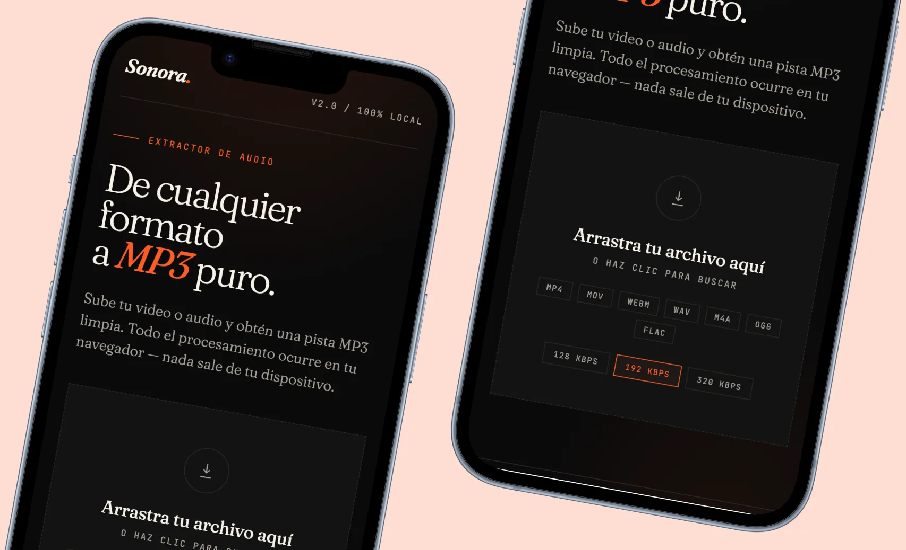

Audio Extractor
Extract the audio track from a video file as MP3, WAV or OGG, with quality settings. It runs in the browser.
- Version
- v0.1
- Type
- Public Tool, Web
- Period
- 2025 to now
- Stack
- WebCodecs API, HTML, JS
- Team
- Solo

The problem
Designers and editors often need just the audio from a video: podcast clips, voiceover references, sound design for motion, or listening to a long clip without loading the video.
The usual options are full editing suites, which are too heavy, or random websites that upload your file to a server you know nothing about.
How it works
The Audio Extractor runs entirely in the browser using the WebCodecs API. Your file never leaves your device. Drop in a video, choose your output format (MP3, WAV, OGG), choose a quality level, download.
Bitrate options range from voice-grade (96kbps) to lossless. Sample rate is preserved from the source unless you override it.

Interface previewWhere it is now
v0.1 in development. Core extraction working for MP4 and WebM containers. Next iteration adds MOV and broader codec support.